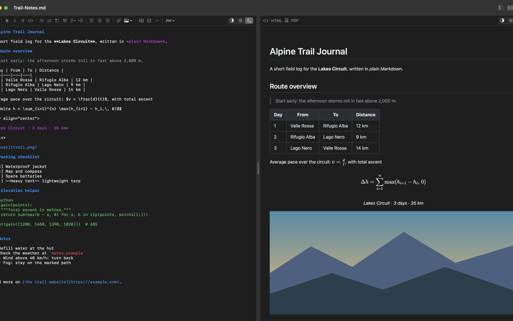

A native macOS Markdown editor with live preview: syntax-highlighted source on the left, GitHub-style rendering on the right, a formatting toolbar, LaTeX formulas and HTML/PDF export.
MacDown Lite is a native Markdown editor for macOS built around one idea: you write raw Markdown on the left and see the formatted result on the right, instantly, with no button to press. It is a small personal project written in Swift with SwiftUI and AppKit, works fully offline and ships as a universal app (Apple Silicon and Intel) in a DMG of less than 1 MB.
The editor is a plain NSTextView with regex-based syntax highlighting and a formatting bar
whose buttons act on the selection or the current line and toggle the formatting off when pressed again.
The preview is a local HTML page inside a WKWebView: marked converts the text,
DOMPurify sanitises any embedded HTML, highlight.js colours code blocks and
KaTeX renders LaTeX formulas — all bundled with the app, so nothing is loaded from the
network.
Local images are served through a custom mdfile:// URL scheme handled by the app, which lets
macOS grant folder access properly. The app is document-based (new, open, save, recent files, automatic
versions), the two panes can be resized with a drag handle, and a script assembles, ad-hoc signs and
verifies the DMG without needing an Xcode project.
<div align> while keeping the content as Markdown.$…$ and block
$$…$$ maths rendered with KaTeX, plus a menu of snippets (fraction, root,
sub/superscript, sum, integral).The whole application: document model, window layout, text formatting logic and the export code, packaged as a Swift Package with no Xcode project.
Window, toolbar, formatting bar, theme pickers and the resizable split view, on top of a document-based DocumentGroup app.
The native editor is an NSTextView with regex highlighting; text commands toggle GitHub Flavored Markdown syntax on the selection.
marked, DOMPurify, highlight.js and KaTeX run inside a WKWebView to render, sanitise and colour the preview offline.